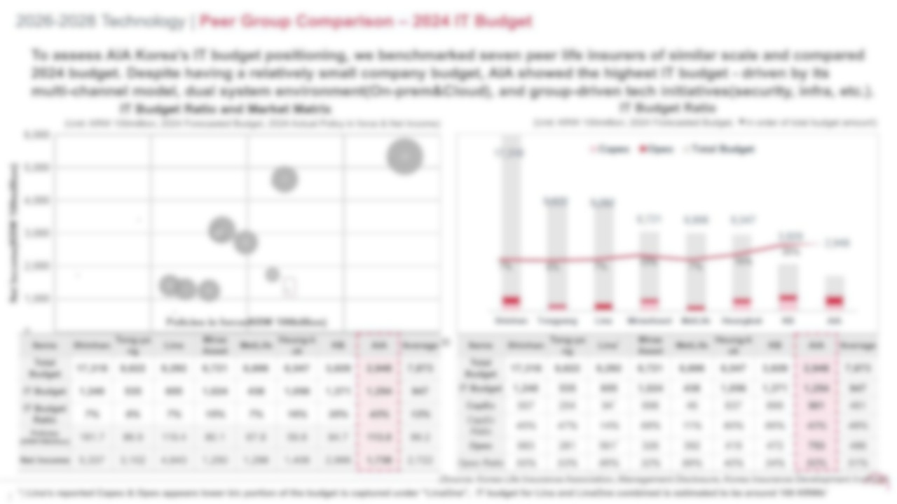
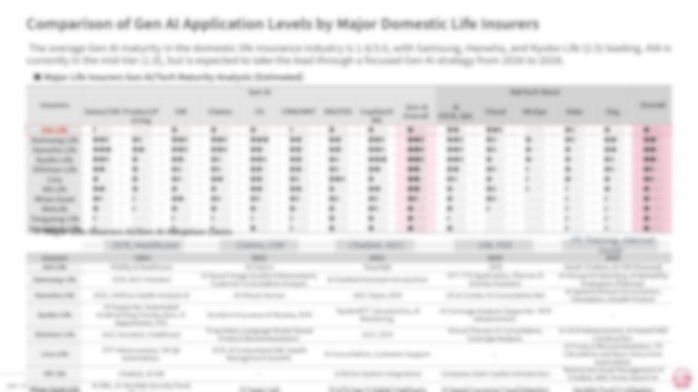

💻Strategy Portfolio · 2026
왕지인 Jee In Wang
Corporate Strategy · Financial Modeling · Market Intelligence
더 큰 성장을 위해 이동해 온 5년, 회사라는 주어진 환경을 레버리지하여 실질적인 결과를 만드는 전략가로 성장했습니다. 전략기획의 틀 위에 재무 분석력을 더해 입체적인 통찰을 기른 지금, 성장의 지향점인 McKinsey에서 제 모든 역량을 총동원하여 새로운 임팩트를 창출하고자 합니다.
AIA LifeTech Planning
·
NHNStrategic Planning
·
Lotte InnovatePI Consulting
·
CFALv.3 Candidate
Core Philosophy
Growth Thesis
지난 5년 9개월의 커리어는 단 하나의 기준으로 설계되었습니다 — 성장. 안정보다 가파른 성장 곡선을, 워라밸보다 밀도 높은 환경을 선택해왔습니다. 다양한 리서치/프로젝트 경험과 CFA 병행 통한 꾸준한 역량개발이 이를 증명합니다.
Exceptional Drive & Dedication
워라밸보다 압도적인 성장을 선택해 온 5년의 궤적. 풀타임 실무 + CFA Lv.3 수험 병행으로 증명된 체력과 집요함. 어떤 극한의 프로젝트에서도 타당한 결과물을 도출합니다.
Hypothesis-Led Problem Solving
낯선 산업도 핵심 드라이버 · 경쟁 구도 · 규제 환경 중심으로 빠르게 구조화. 단순 리서치가 아닌, 날카로운 가설을 세우고 데이터로 검증하는 방식.
Excellent Numerical Skills
NOI · IRR · BEP · P&L 모델링부터 Bottom-up Market Sizing까지. 수치가 뒷받침되지 않는 전략은 전략이 아니라는 원칙 하에 모든 분석을 수행.
C-Level Communication
CTO · CEO · Chairman 직보 경험. 홍콩 그룹 본사 영문 거버넌스 보고 정례화. 복잡한 데이터를 경영진이 결정을 내릴 수 있는 구조로 설계.
Career Timeline
5년 9개월의 궤적
AIA생명보험
테크기획팀 대리 · Digital Strategy & Market Intelligence
- IT 자회사 설립 End-to-End 사업타당성 검토 주도 — NOI · IRR · 배당 시나리오 Financial Modeling → 이사회 보고 수준 의결 자료 작성
- 3개년 IT 중장기 전략 로드맵 수립 (4개 축 As-Is→To-Be) → CTO · 개발부문장 직접 보고
- 생보사 11개사 AI · IT Maturity Matrix 직접 설계 → 주간 Executive Intelligence Report 단독 작성
- 홍콩 그룹 본사 IT 프로젝트 · 예산 실적 · KPI 영문 정례 보고 및 Ad-hoc 실시간 대응
- AIA 테크본부 해커톤 금상(2위)
NHN Corporation
전략기획팀 전임 · M&A Screening & Group P&L Management
- 핀테크 · 결제 · P2P · 대체투자 · B2B SaaS 등 10개+ 산업 시장 구조 · 규제 · 경쟁 구도 심층 분석
- M&A · 투자 · 제휴 대상 스크리닝 — BM 분해 → BEP · 시너지 시뮬레이션 → C레벨 의사결정 지원
- 5개 계열사 P&L 분석 → 두레이 협업툴 사업 적자폭 YoY 30% 감소, 여행박사 일본사업 광고비 ROI 10%p 개선
- Python DART 자동화 → 데이터 수집 속도 10배 향상, 보고서 작성 시간 100% 단축
- NHN 우수사원 포상 2023 · 2024
롯데이노베이트
ERP컨설팅팀 PI담당 선임 · Process Innovation Consulting
- 롯데 계열사 3개 프로젝트 End-to-End 수행 — 현장 실사 → As-Is 진단 → To-Be 설계 → 임원 프레젠테이션 전 사이클
- 롯데제과 S&OP DT 마스터플랜 · 롯데면세점 차세대 IT PI · 롯데마트/슈퍼 물류 통합
Selected Work
실제 작업물
IT Strategy
금융사 IT 중장기 전략 수립
AIA생명 테크기획팀 · 2025.06–10
CEO 보고 자료
As-Is → To-Be
↗ 슬라이드 5장 보기

🔍